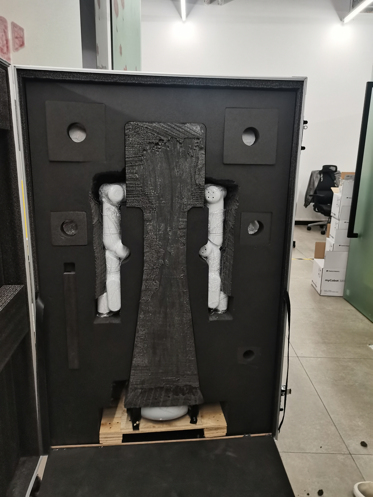
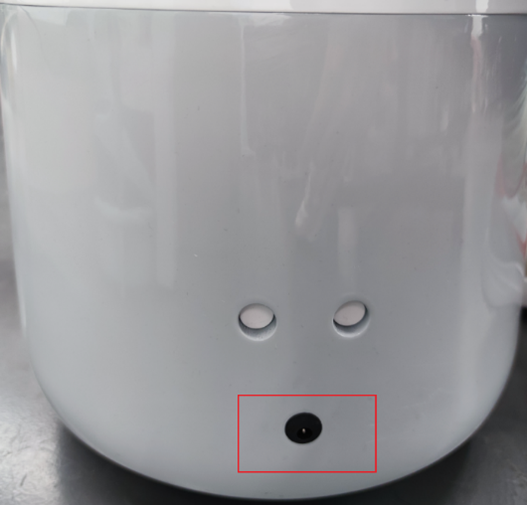
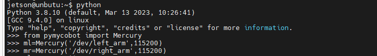

1 产品标准列表
产品标准清单对照表
| 序列号 | 产品 |
|---|---|
| 1 | 水星Mercury X1轮式人形机器人 |
| 2 | 产品手册 |
| 3 | 合格证书 |
| 4 | 使用说明 |
| 5 | 发货清单 |
| 6 | 电源(24V) |
注意: 包装框到位后，请确认机器人包装完整。如果有任何损失，请及时联系物流公司和您所在地区的供应商。解开包装后，请根据项目列表检查框中的实际内容。
2 产品开箱指南
产品开箱图形指南
为什么您需要按照以下步骤移出产品
在本节中，我们强烈建议按照指定的步骤移出产品。这不仅有助于确保产品在运输过程中不会损坏，还可以将意外故障的风险降至最低。请仔细阅读以下图形指南，以确保您的产品在开箱过程中是安全的。
- 1 检查箱体是否损坏。如有损坏，请及时与您所在地区的物流公司和供应商联系。
- 2 打开包装盒，取出使用说明、海绵包装盖、水星Mercury X1轮式人形机器人、配套电源、发货清单。
- 3 在进行下一个步骤之前，请确保每一步都已完成，以防止不必要的损坏或遗漏。
注意: 取下产品后，请仔细检查每件物品的外观。请将箱子里的实际项目与项目清单核对一下。

开箱图片
3 夹爪、摄像头安装指南
4 开机检测指南
外部电缆连接
操作前请仔细阅读 章节安全说明 ，确保操作安全。同时将电源适配器与底座连接。
将电源适配器连接上机械臂，也可通过内置电源供电，并将机器人移至空旷区域防止碰撞。

底座后部电源接口位置

电源开关位置

急停开关位置
在按下急停开关后机器人将立即停止运动，复位时需将急停开关顺时针旋转，急停开关将自动弹起，之后可上电恢复控制。
点击电源开关，并确保急停处于复位状态，开始使用机械臂。

底部LED灯亮起
进入开机界面

屏幕点亮
进入登录界面后输入开机密码Elephant
基础功能检测
检测双臂是否可以正常运动：
- 打开终端进入python环境
- 导入pymycobot包，初始化左右臂并上电
使用get_angle()获取关节角度,若能获取到角度则上电成功
校准零点，再次使用get_angle()获取关节角度，当返回为 [0.0, 0.0, 0.0, 0.0, 0.0, 90.0, 0.0]时零点校准成功
- 对左右臂进行控制看是否能运动，若成功运动则机械臂正常


上电后获取关节角度
检测移动底座是否可以正常运动：
- 在终端输入下列指令启动底座控制
roslaunch turn_on_mercury_robot turn_on_mercury_robot.launch

- 再打开一个新的终端，输入下列指令启动键盘控制移动底座。根据提示进行按键控制，若小车正常运动则移动底座正常。
roslaunch mercury_x1_teleop keyboard_teleop.launch
检测激光雷达是否正常
- 打开终端输入
roslaunch turn_on_mercury_robot mapping.launch - 打开一个新的终端输入
若自动打开的rviz中有如图白色区域，则激光雷达扫描正常roslaunch turn_on_mercury_robot cobotx_rviz.launch